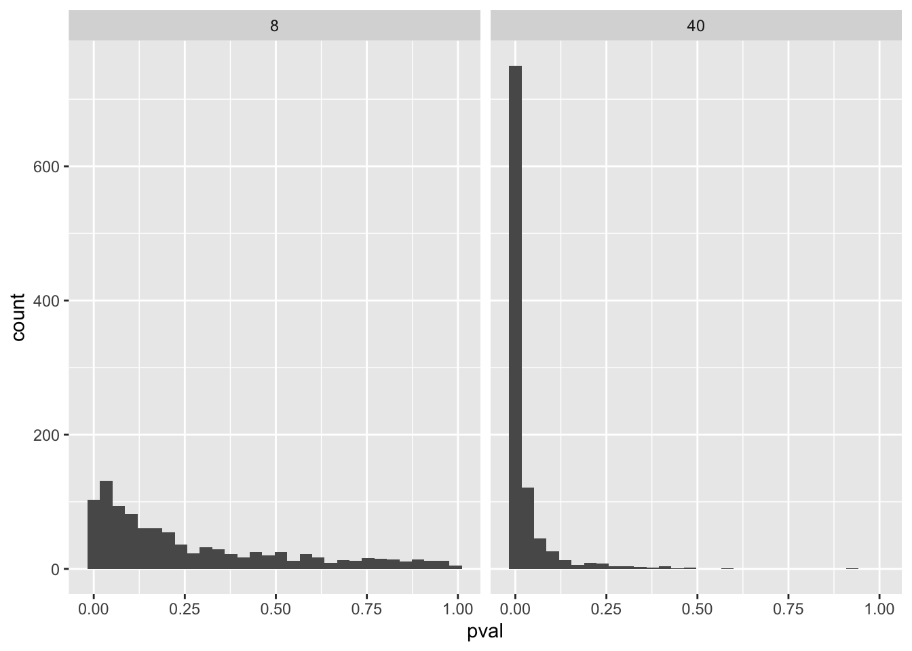

3Assignment 3: Drawing inference from statistical models, and statistical power
Call:
lm(formula = y ~ 1, data = samp1)
Residuals:
Min 1Q Median 3Q Max
-6.5322 -1.2523 -0.0883 1.3540 4.8692
Coefficients:
Estimate Std. Error t value Pr(>|t|)
(Intercept) 1.840 1.251 1.47 0.185
Residual standard error: 3.539 on 7 degrees of freedom
[1] 1.839727
(Intercept)
1.839727
[1] 3.539191
[1] 1.251293
3.1 Oppgave 1:
Ved bruk av regresjonsmodellen lm1 og lm2 skal jeg i denne oppgaven definere begrepene estimat, SE (standardfeil), T-verdi og P-verdi ut ifra det vi vet fra prosessen med og gjennomføre en studie med et tilfeldig utvalg.
Estimat: Representerer gjennomsnittet av det vi har målt i utvalget. Så i vårt tilfelle viser estimatet gjennomsnitt på den ene variabelen (y) i de to forskjellige utvalgene.
SE (standardfeil): SE defineres som hvor mye vi kan forvente at gjennomsnittet kan variere hvis du hadde valgt en annen tilfeldig gruppe fra populasjonen. I tillet vi har er det ett SE på 3,539 som vil si hvis vi gjennomfører en ny studie med ett annet utvalg, vil vi kunne forvente en endring i gjennomsnitttet på 3,539. Jo lavere SE vi har, jo mer sikker er vi på at utvalget representer populasjonen bedre.
T-verdi: En t-verdi er et statistisk mål som anvendes i t-tester for å vurdere om forskjellen mellom to grupper, eller mellom et prøvegennomsnitt og en kjent verdi, er signifikant. Den uttrykker hvor stor den observerte forskjellen er i forhold til den forventede variasjonen i dataene, representert ved standardfeilen. En høy t-verdi indikerer at forskjellen er betydelig i forhold til variasjonen, noe som kan tyde på en reell effekt. T-verdien i m1: 1,47, T-verdi m2: 3,276
P-verdi: En p-verdi er et statistisk mål som uttrykker sannsynligheten for å få et resultat som er minst like ekstremt som det observerte, gitt at nullhypotesen er sann. Den brukes til å vurdere om en observert effekt eller forskjell kan forklares med tilfeldigheter. En lav p-verdi (for eksempel mindre enn 0,05) antyder at resultatet er lite sannsynlig å ha oppstått ved tilfeldigheter alene, og nullhypotesen kan derfor avvises. P-verdien gir altså en indikasjon på hvor sterk evidensen er mot nullhypotesen, men sier ikke noe om effektenes størrelse eller praktiske betydning.
3.2 Oppgave 2
Forskjellene i de to studiene (m1 og m2) er prøvestørrelsen. M2 har n=8 mens m2 har n=40. Studien med større prøvestørrelse vil gi mer pålitelige svar, da den statestistiske styrken er høyere, og sansynligheten for at det faktisk er funnet en sann effekt er større. Dette fordi med færre prøvestørrelser er man mer sårbar for tilfeldige svar, og dermed usanne sanheter.
3.3 Oppgave 3
Vi bruker skyggelagte områder i de ekstreme tilfellene ved nedre og øvre del for og utelukke uteliggere, det vil si de ekstreme tilfellene som ikke er representative for gjennomsnittet i prøvegruppen.
3.4 Oppgave 4
Standardfeilen (SE) er et estimat på hvor mye feilene skal variere fra prøve til prøve, standardavviket er det faktiske variasjonen. Jo flere prøvepersonen det er, jo likere vil SE og standardavviket være, fordi SE forutsier dette.
3.5 Oppgave 5

# A tibble: 2 × 2
n sig_results
<dbl> <dbl>
1 8 0.227
2 40 0.865
One-sample t test power calculation
n = 40
d = 0.5
sig.level = 0.05
power = 0.8693981
alternative = two.sided
De to histogrammene viser hvordan p-verdiene varierer mer for hver prøvestørrelse. Ut fra dette kan vi tolke at p-verdiene er mer spredt jo mindre prøvestørrelsen (N) er. Dette kan indikere til en svakere statestistisk styrke, og det er større sjangse for og oppdage en falsk effekt. Ved en større prøvestørrelse som vi ser i det andre histogrammet viser det til fler p-verdier som ligger mer mot signifikant nivået, og det er større sansynlighet for at det er en sann effekt, det vil si en sterkere statestistisk styrke (power).
3.6 Oppgave 6
#| message: false#| warning: false#| code-fold: true#| echo: falselibrary(tidyverse)library(pwr)library(ggplot2)library(dplyr)# Count the proportion of tests below a certain p-value for each results %>%filter(pval <0.05) %>%group_by(n) %>%summarise(sig_results =n()/1000)
# A tibble: 2 × 2
n sig_results
<dbl> <dbl>
1 8 0.227
2 40 0.865
# Using the pwr packagelibrary(pwr)pwr.t.test(n =40, sig.level =0.05, d =1.5/3, type ="one.sample")
One-sample t test power calculation
n = 40
d = 0.5
sig.level = 0.05
power = 0.8693981
alternative = two.sided
Konklusjonen på disse studiene viser til at jo større utvalg det er, jo høyere statestisisk styrke. (power). Med høyere statestistisk styrke jo mer sansynlig er det at vi har funnet en sanhet, og ikke falsk sannhet som i tilfellet hvis det er lav statestistisk styrke, som i tilfellet med n=8 (færre forsøkspersoner)
3.8 Oppgave 8
Ved å gjennomføre 1000 gjentatte studier med et signifikansnivå satt til 0,05, kan vi forvente rundt 50 falske positive resultater. I mine beregninger fant jeg at det var r false_positive_8 falske positive for studiene med en utvalgsstørrelse på 8, og r false_positive_40 for studiene med en utvalgsstørrelse på 40. Hvis signifikansnivået senkes til 0,025, reduseres antall falske positive noe. Da vil studiene med en utvalgsstørrelse på 8 gi r false_positive_8_alpha0.025 falske positive, mens studiene med 40 deltakere gir r false_positive_40_alpha0.025 falske positive.